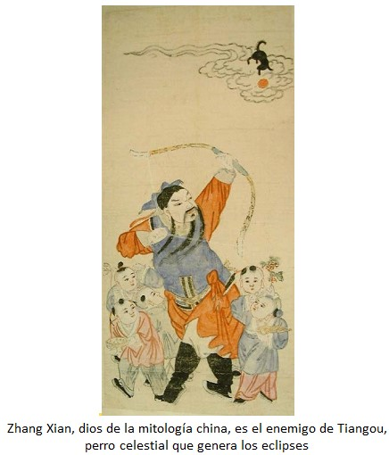
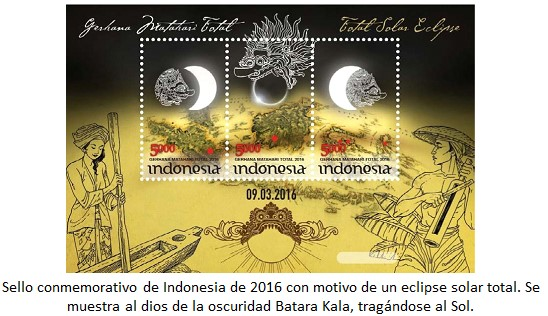
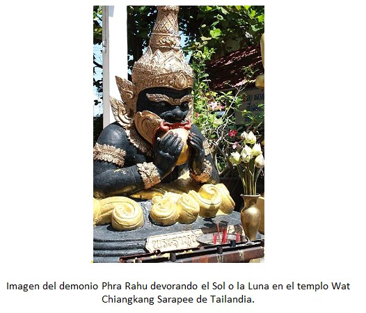
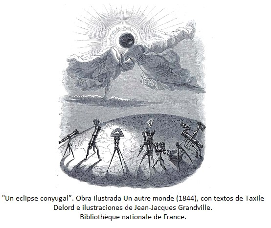
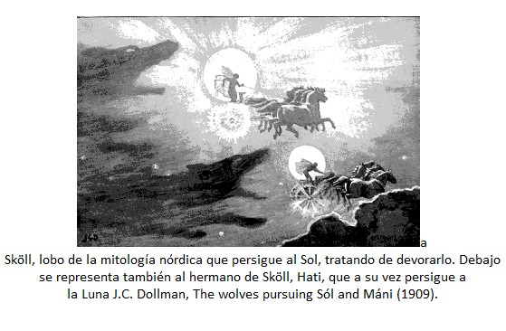
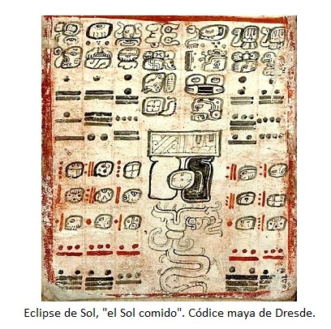
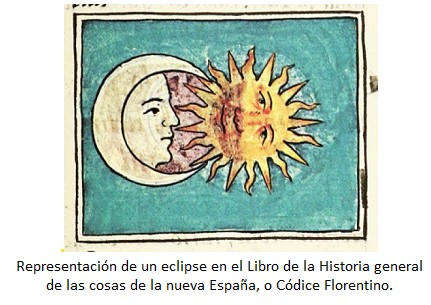
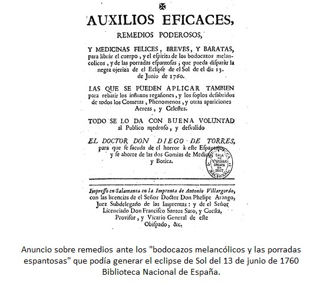

Los eclipses totales de sol han sido históricamente eventos que han sobrecogido a la humanidad por su naturaleza inexplicable antes del desarrollo de la ciencia moderna. La súbita desaparición de la luz en medio del día y el cambio de color de la Luna a un rojo sangre generaron un sentimiento de inquietud que impulsó a diversas culturas a buscar explicaciones a través de mitos y leyendas. Estas narraciones, a menudo transmitidas de forma oral y adaptadas a través de los siglos, reflejan el esfuerzo por entender y, en ocasiones, intentar controlar fenómenos que resultaban profundamente enigmáticos.
Una de las interpretaciones más recurrentes a nivel global es la idea de que un ser maligno intenta devorar nuestra estrella. En la mitología nórdica, se cuenta que los lobos Sköll y Hati (o el lobo gigante Fenrir en algunas versiones) persiguen incansablemente al Sol y la Luna para tragarlos. En el lejano oriente, específicamente en China, se creía que un dragón celestial o el perro celeste Tiangou atacaban al astro rey. Para proteger a sus hijos de Tiangou, se representaba al dios Zhang Xian disparándole flechas con un arco.

Otras culturas imaginaron atacantes similares: los Choctaw de Oklahoma hablaban de una malvada ardilla negra, en Vietnam se culpaba a una rana gigante, y en la mitología andina se trataba de un puma. Los aztecas, por su parte, veían en el dios jaguar Tepeyollotl al ser que mordía al Sol y amenazaba con tragárselo por completo.

Ante esta amenaza percibida de perder la fuente de vida, los pueblos desarrollaron rituales para recuperar la luz. La respuesta más común en lugares tan diversos era la generación de un ruido estruendoso mediante el tañido de tambores, gritos y cualquier método que pudiera ahuyentar al atacante. Esta es una tradición que, curiosamente, se mantiene viva en algunas regiones hoy en día como un acto simbólico de protección.
Desde la India proviene una de las historias más fascinantes para explicar por qué el Sol siempre resurge: el mito del demonio Rahu. Rahu deseaba la inmortalidad y logró robar un sorbo del elixir de la vida. Sin embargo, el Sol y la Luna lo delataron ante el dios Vishnu, quien decapitó al demonio antes de que el brebaje pasara por su garganta. Como la cabeza de Rahu ya era inmortal, persigue eternamente a los astros en venganza. El eclipse ocurre cuando logra alcanzarlos, pero al no tener cuerpo, el astro reaparece rápidamente a través de su cuello cortado. Para ayudar al Sol en esta lucha, la gente en la India suele realizar rituales de baño en las aguas sagradas del Ganges.

En otros casos, el eclipse no es visto como un ataque externo, sino como un conflicto o encuentro entre el Sol y la Luna. El pueblo Pomo de Estados Unidos cuenta que un oso, mientras paseaba por la Vía Láctea, se peleó con el Sol por el derecho de paso; ese enfrentamiento es lo que oscurece el cielo. Los Batammariba de Togo y Benín ven el eclipse como una lucha entre los dos astros; cuando esto ocurre, la comunidad se reúne para resolver sus propios problemas humanos, esperando dar el ejemplo a las deidades para que hagan las paces.
Por el contrario, algunas tradiciones ven el fenómeno como un acto de amor o unión conyugal.

En Tahití, se creía que el Sol y la Luna eran amantes que se unían durante el eclipse, perdiéndose en la intensidad del momento y creando las estrellas para iluminar su regreso a la normalidad. La mitología alemana presentaba una visión similar, donde un Sol femenino y una Luna masculina estaban casados; el eclipse ocurría cuando la Luna buscaba la compañía de su esposa. En Australia, los Euahlayi contaban que la mujer Sol, Yhi, perseguía al hombre Luna, Bahloo, lo que podía desencadenar un eclipse total si lograba alcanzarlo. En el Ártico, los Inuit narraban la persecución de la diosa solar Malina por su hermano, el dios luna Igaluk; el eclipse era el breve instante en que él finalmente la alcanzaba.

Los eclipses también han sido interpretados como señales de descontento divino o enfermedad. Los incas veían en la desaparición de Inti, su dios benevolente, un signo de que este se encontraba molesto. Una visión compartida por los antiguos griegos y los habitantes de Transilvania, quienes asociaban el eclipse con el enojo de los dioses por el mal comportamiento humano. En Sudamérica, los aymaras creían que el Sol estaba enfermo y cerca de la muerte, por lo que encendían hogueras para darle calor.

En América del Norte, los pueblos Ojibwa y Cree relataban cómo un niño llamado Tcikabis atrapó al Sol en una trampa para vengarse por una quemadura, y tuvo que ser un humilde ratón quien royera las cuerdas para liberarlo. Por su parte, el pueblo Nuxalk de Canadá creía que el Sol era simplemente un poco torpe y que, de vez en cuando, dejaba caer su antorcha.
El impacto social incluía temores específicos documentados en textos históricos. El Códice Florentino describe el pánico de los pueblos indígenas mexicanos, quienes temían que las mujeres embarazadas abortaran o que los niños sufrieran malformaciones si no tomaban precauciones, como colocar obsidiana en su boca. Incluso existen registros de 1760 sobre remedios para librar al cuerpo del "horror" y la "negra ojeriza" que provocaban estos eventos.

En las grandes religiones, los eclipses se han visto como presagios de gran relevancia, como el evento mencionado durante la crucifixión de Jesucristo, o como ocasiones de especial recogimiento y oración en el Islam.
Finalmente, existen visiones de profundo respeto místico, como la del pueblo Navajo. Para ellos, el eclipse es un momento de renovación y manifestación del orden cósmico que requiere reverencia y silencio absoluto dentro del hogar. En conclusión, estas diversas leyendas demuestran que el eclipse ha sido una fuente de inquietud para muchas culturas, pero también han motivado una búsqueda incansable de respuestas sobre las preguntas más trascendentales de la humanidad.
